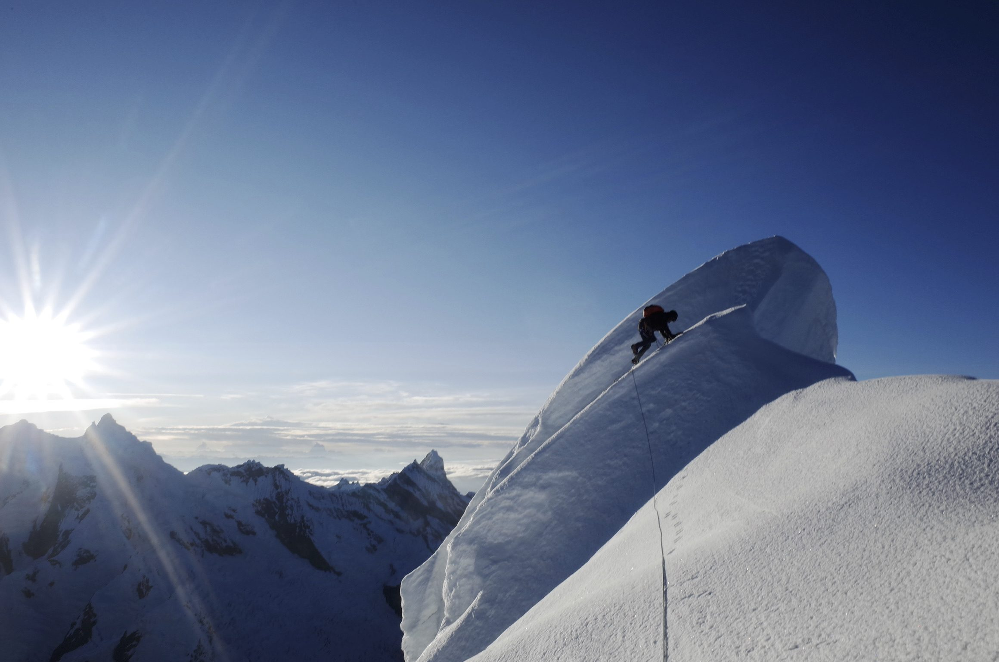
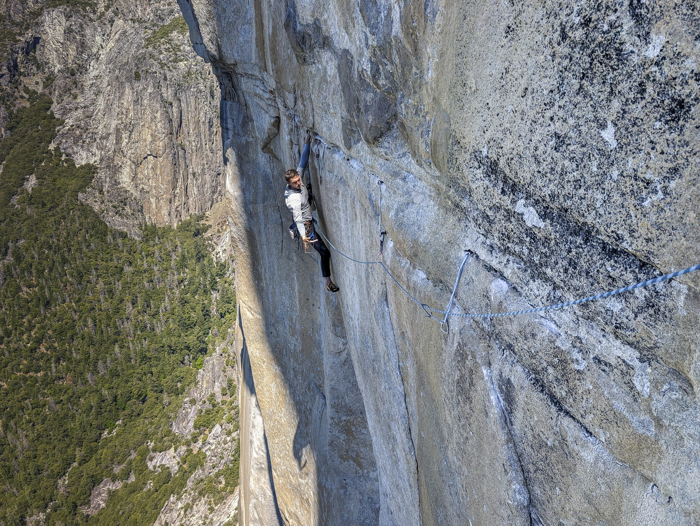
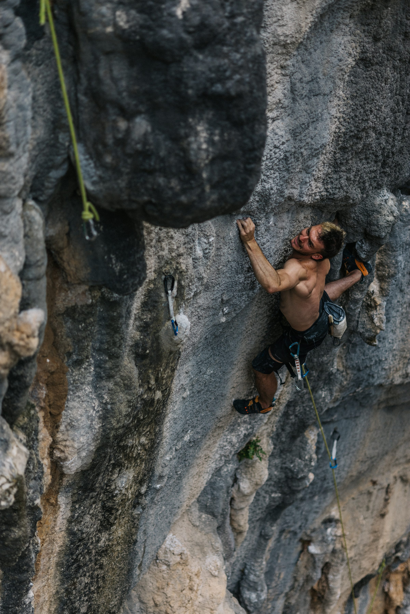
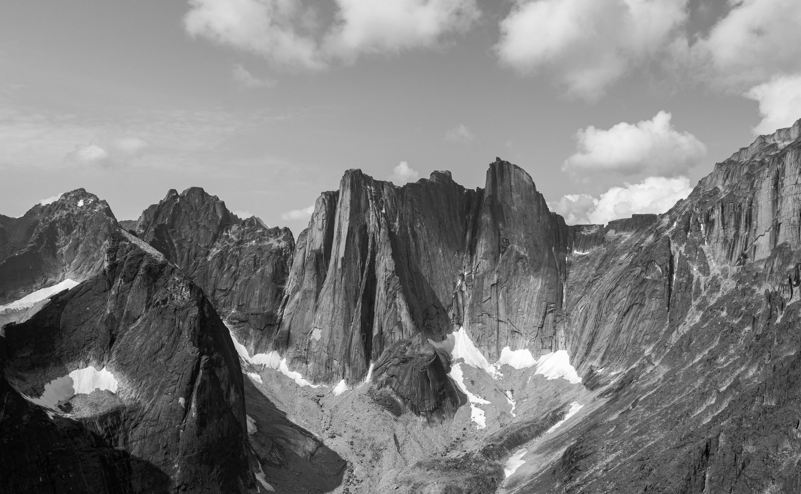

02Tick list
Around the world
A short resume of climbing
Supported by

Up high
Alpinism
- “Brilliant Blue”AI3 M7+, 850mWhite Sapphire (6040m), Kishtwar Valley, IndiaFirst ascentRead the story →
- Para-alpinism in the Cordillera BlancaRead the story →
- Failure or success? A trip to the Garhwal HimalayaRead the story →

On the walls
Big wall and multipitch free climbing
- “Golden Gate”5.13a, 36 pitchesEl Capitan, Yosemite CAGround up free ascentRead the story →
- “Desert Solitaire”5.13b, 11 pitchesRed Rock NVIn-a-day free ascent
- “Westie Face”5.13a, 8 pitchesLeaning Tower, Yosemite CAGround up free ascent

Down low
Sport climbing and bouldering
- “Dante’s Inferno” (extension)5.13dEl Salto, MX
- “America’s Most Wanted”5.13cMt. Charleston, NV
- “The Force”V9Yosemite, CaliforniaOne session
- “Gato Negro” (sit)V10El Chaltén, ArgentinaTwo sessions

Far away
Expeditions
- Indian HimalayaKishtwar ValleyRead the story →
- Cordillera BlancaPeru — climb and flyRead the story →
- PatagoniaEl Chaltén, ArgentinaRead the story →
- Northwest TerritoriesCirque of the UnclimbablesRead the story →